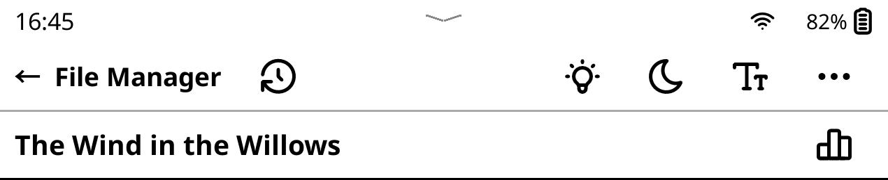
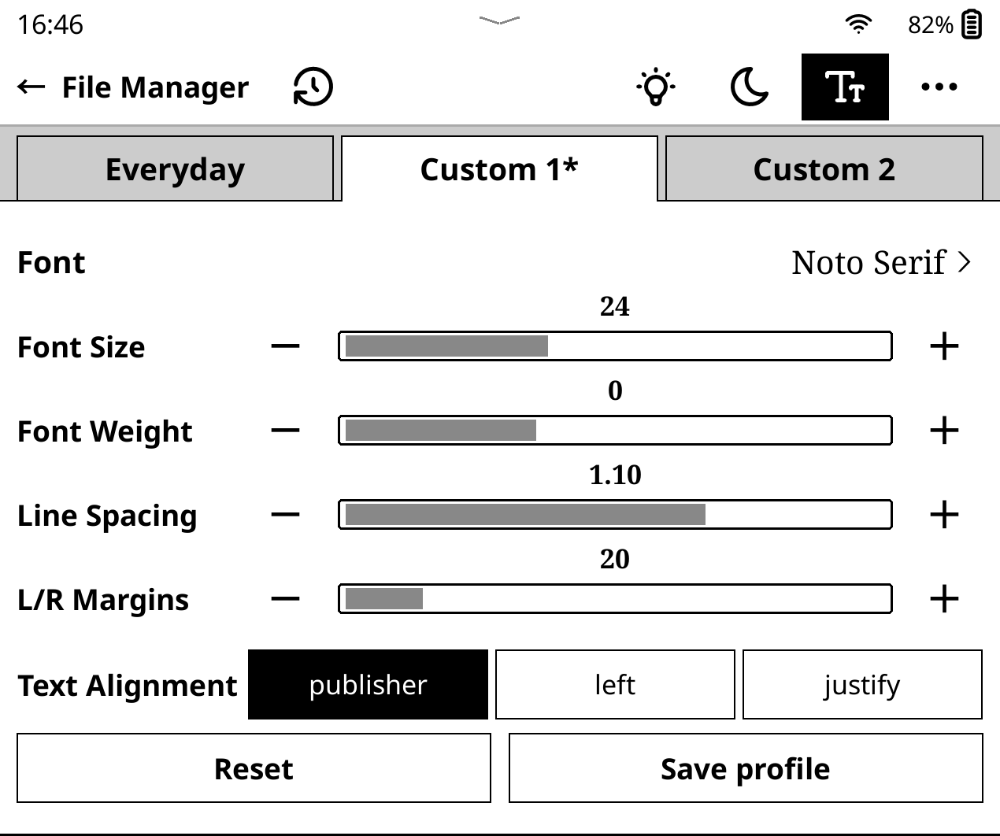
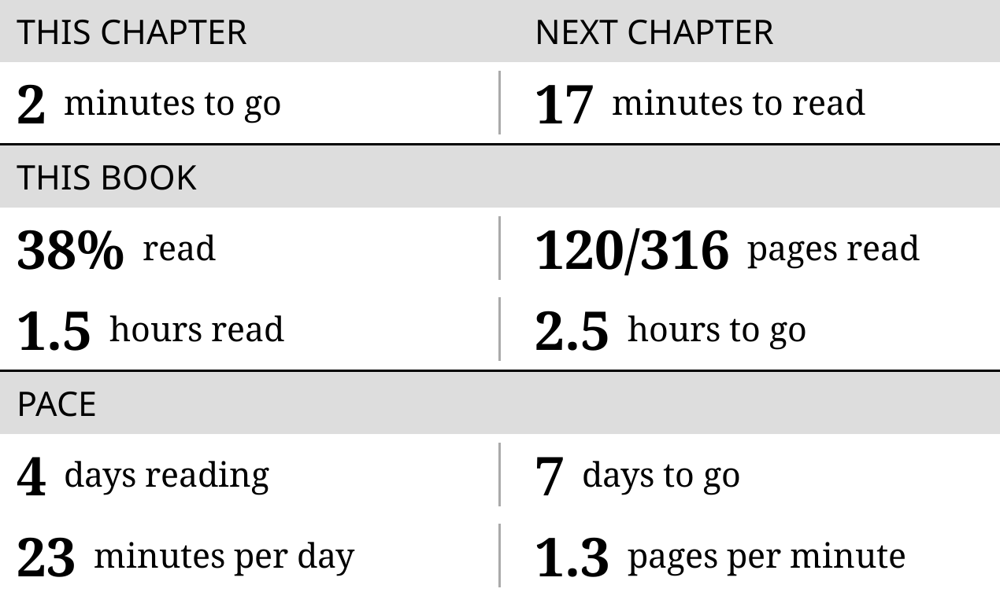

Plain UI user guide
- Swipe down while reading for reading tools.
- Swipe up from the bottom edge for navigation and page previews.
Get started
- Copy
plainui.koplugininto KOReader’spluginsfolder. - Make sure both Plain UI and KOReader’s built-in Cover browser plugins are enabled, then restart KOReader.
Your library
- Tap the selected tab again for its menu.
- Inside an author, series, or tag, tap the heading to combine filters.
- Last read follows reading history, newest first; books without history appear last.

Reading tools
- The history icon beside File Manager lists recent books.
- Tap outside or swipe up to dismiss the toolbar.
- The top chevron opens KOReader’s native menu.


Typography
- Changes are saved for this book automatically; * marks custom settings.
- Reset restores the preset. Save profile updates it for books without custom settings when next opened.
- Saving Everyday also updates KOReader’s typography defaults.


Navigation
- Browsing previews keeps your reading position unchanged. Tap the center page to jump.
- The dot or Return to… restores your starting preview.
- After a jump, the footer lets you retrace your route. Stay here dismisses it.


Reading stats
In Plain UI’s popup, tap a time value to switch between 1.5 hours and 1h30m.


Advanced
Long-press shortcuts
Long-press Books for the folder menu, the lighting icon to toggle the frontlight, or a profile tab to rename it.
Restore touch
After disabling touch under More, sleep and wake the device to restore it.
Larger cover badges
With KOReader closed, add this entry to the existing table in settings.reader.lua, then restart. The default is 13.
["plainui_badge_font_size"] = 15,Older library patches
Remove only the files named in Plain UI’s overlap notice, then restart KOReader. Reading-stats patches can stay installed.
2-author-series.lua2-filemanager-metadata-tabs.lua2-finished-badge.lua2-reading-percentage.lua